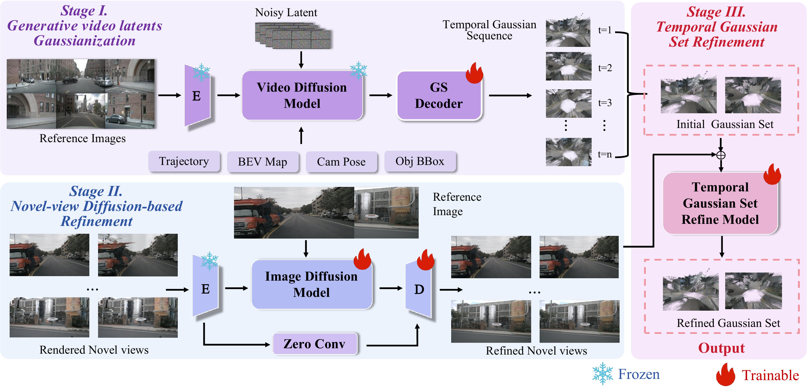

D-World: Gaussianizing Video Latents for 4D Driving Scene Generation
Abstract
Driving-scene generation can scale autonomous-driving simulation, but RGB videos are hard to re-render from new viewpoints or edit as 3D scenes. We introduce D-World, a framework that converts multi-view temporal video diffusion latents into temporally ordered 3D Gaussian Splatting (3DGS). D-World decodes video latents into pixel-aligned Gaussian primitives, improves sparse-view novel renderings with a geometry-anchored one-step Gaussian Fixer, and distills the fixed views into refined temporal 3DGS. This preserves video-diffusion priors while enabling novel-view rendering and controllable Gaussian-space editing. To reduce diffusion cost, D-World combines head-aligned attention, static conditioning cache, guarded block reuse, batched refinement, and an optimized denoiser, speeding up driving latent generation by 1.70x and Gaussian Fixer inference by 1.40x over a vanilla implementation while preserving high fidelity. On nuScenes, D-World achieves FID 4.63 for original-view generation and 9.34 for novel-view synthesis under a 1m ego-trajectory shift.
Method Overview
